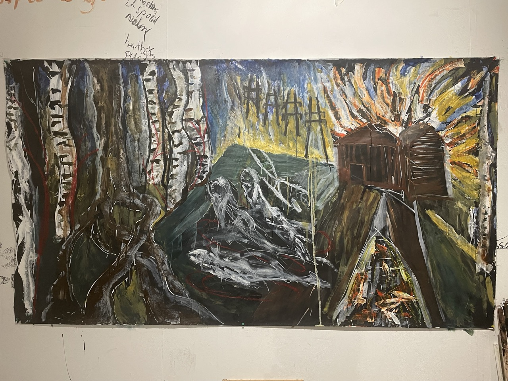

| Education | Year |
|---|---|
| IO Academy Full Stack Development | 2024 |
| Art, Design & Media Foundation Degree, Totnes Art Foundation | 2024 |
| Data Analysis Level 4, Cambridge Spark | 2023 |
| Sustainable Horticulture, Schumacher College | 2012-2014 |
| Experience | Year |
|---|---|
| Totnes Foundation Exhibition | June 2024 |
| Totnes Foundation Exhibition | June 2023 |
| Garden Artist in residence, Private Household, Liskeard | 2021-2022 | Garden Artist in residence, Badminton Estate, Cotswolds | 2019-2021 |
| Director, Landscape & Spatial Design Company | 2015-2019 |
| Chef de Partie | 2010-2018 |
The immanent and the transcendent, the absolute and the personal. My practice resides within the liminal, at the threshold of knowing. Here, where boundaries dissolve and opposites intertwine, I explore the interplay between inner truth, the outer world and universal mystery. Through the lenses of Posthumanism, Decolonial Feminism and Animism, I engage in pilgrimage, wilderness vigil and rites of passage. This process coaleses in the studio with rigorous observation with automatic intuition, culminating in gestural mark-making that seeks to capture a fleeting eternity. I strive for likeness that transcends representation, expressed through paintings, works on paper and artist film.
Hands in the Ground,
Grief is weary amongst little deaths.
Ice age,
Tidal wave,
Another Storm
Another Bomb
The great compost heap turns,
To Ash,
Another cycle.
Creation yearns anew
landwaterfood@gmail.com
+44 (0) 7599269042